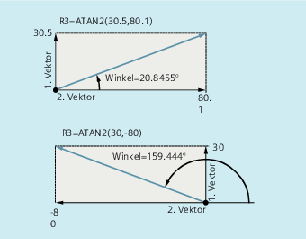

Operator / Rechenfunktion | Bedeutung |
| Addition |
| Subtraktion |
| Multiplikation |
| Division 1) |
| Ganzzahl-Division 1) |
| Modulo-Division (Liefert den Rest der Ganzzahl-Division) 1) |
| Kettungsoperator für FRAME-Variablen |
| Sinus |
| Cosinus |
| Tangens |
| Arcussinus |
| Arcuscosinus |
| Arcustangens2 1) |
| Quadratwurzel |
| Betrag |
| |
| Genauigkeitskorrektur bei Vergleichsbefehlen |
| Runden auf eine ganze Zahl |
| |
| Natürlicher Logarithmus |
| Exponentialfunktion |
| Kleinerer Wert zweier Variablen |
| Größerer Wert zweier Variablen |
| Variablenwert, der im definierten Wertebereich liegt |
| |
| |
| |
| |
1) Siehe Absatz "Beispiele" | |
Bei den Rechenfunktionen gilt die übliche mathematische Schreibweise. Prioritäten in der Abarbeitung werden durch runde Klammern gesetzt. Für die trigonometrischen und deren inverse Funktionen gilt die Gradangabe (rechter Winkel = 90°).
(Typ REAL) = Typ INT oder Typ REAL) / (Typ INT oder Typ REAL);
Beispiel: 3 / 4 = 0.75
(Typ INT) = (Typ INT oder REAL) / (Typ INT oder REAL);
Beispiel: 7 DIV 4.1 = 1
(Typ REAL) = (Typ INT oder REAL) MOD (Typ INT oder REAL);
Beispiel: 7 MOD 4.1 = 2.9
Die Rechenfunktion ATAN2 berechnet aus zwei aufeinander senkrecht stehenden Vektoren den Winkel des Summenvektors.
Das Ergebnis liegt im Bereich von vier Quadranten (-180° < 0 < +180°).
Basis für den Winkelbezug ist immer der 2. Wert in positiver Richtung.
| Programmcode | Kommentar |
|---|---|
| R1=R1+1 | ; Neues R1 = altes R1 + 1 |
| R1=R2+R3 R4=R5-R6 R7=R8*R9 | |
| R10=R11/R12 R13=SIN(25.3) | |
| R14=R1*R2+R3 | ; Punktrechnung geht vor Strichrechnung. |
| R14=(R1+R2)*R3 | ; Geklammerte Ausdrücke werden zuerst berechnet. |
| R15=SQRT(POT(R1)+POT(R2)) | ; Innere Klammern werden zuerst aufgelöst: R15 = Quadratwurzel( (R1^2 + R2^2) ) |
| RESFRAME=FRAME1:FRAME2FRAME3=CTRANS(…):CROT(…) | ; FRAME-Verknüpfung mit Kettungsoperator Wertzuweisung an eine FRAME-Komponente |